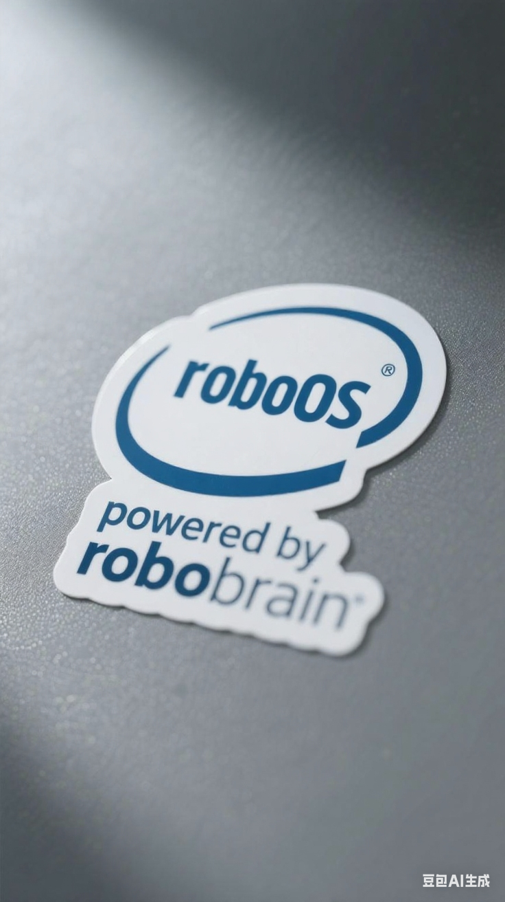

Getting General Purpose Robots by Decomposing Problems and Working with Data
roboOS®, powered by roboBrain™

I’ve been going through the RoboOS, RoboBrain, and Robobrain 2.0 papers from the Beijing Academy of Artificial Intelligence (BAAI).
Most robotic solutions I’ve encountered so far leave me feeling like I’m watching yet another Jenga tower of hacks: blocks ducktaped together for the purpose of solving the previous block’s issues. All without fixing the actual fundamental issue that is the VLM.
My view on the current landscape of general purpose robotics.
These series of papers do something that feels like cold drink in a desert of hobbling together complicated pipelines and towers: the papers identify issues with VLMs, and then solve those issues by working with the data.
RoboOS is an overarching system for managing embodied robotic systems. RoboBrain is the VLM/MLLM that executes the plans.
RoboOS: A 3-piece kit instead of a 300-piece puzzle
RoboOS decomposes the generalizability problem of robotics into three clean layers:
- The Embodied Brain: A cloud-deployed MLLM that thinks globally–planning, replanning, and correcting errors in real time.
- The Cerebellum Skill Library: A plug-and-play toolkit that enables various actions, allowing the robot to perform different functions.
- Real-Time Shared Memory: Helps maintain spatial memory, temporal memory, and embodiment memory.
| Component | Analogy | Job |
|---|---|---|
| Embodied Brain (cloud LLM) | Control Center | high-level planning, error recovery |
| Cerebellum Skill Library (edge containers) | Toolbox | low-latency skills like grasping, SLAM |
| Real-Time Shared Memory | Whiteboard | spatial, temporal, and robot-state cache |
There are three manageable chunks that allows for the creation of systems that are general enough for specialized tasks, but not overly general that its bad at everything. It might not allow for novel actions, but it can allow for known actions. And it allows for each of these pieces to be iterated on through their own merits.
In addition, RoboOS allows for multiple different robots to coordinate with each other. What occured in my mind is that that doesn’t have to be individual separate robots; it could be different pieces of the same robot (e.g., the legs and the hands of a robot).
RoboBrain: solve the foundations, and work with the data
Many general purpose robotic solutions try to remedy issues with VLMs with all sorts of pipelines, gadgets, and gizmos. Rather than actually solving the foundational issue that is the VLM itself. Many solutions use VLMs for purposes that they are exactly bad for. VLMs are langauge biased, spatially blind, and temporally naive.
RoboBrain 1.0 tackled:
- task planning by using QA pairs that decompose long horizon tasks (“make coffee”) into atomic steps (“reach mug → grasp handle → lift → …”)
- affordance identification by using 6k images with bounding boxes of “where you’d actually touch the mug” and LoRA-tuning the LLM
- trajectory planning by feeding the LLM start / goal 2-D points and asking it to regress waypoints
RoboBrain 2.0 doubles down on this philosophy with improvements in three aspects:
- Spatial understanding with multiview static images, visual grounding, object pointing, and spatial referring examples
- Temporal modeling by linking video frames with positional encoding that tracks both the space and time of each frame, multi-robot planning examples, close-loop interaction examples, and ego-view planning
- Reasoning chains
What was done for both models was construct a dataset that forced the model to learn these skills.
In addition, the RoboBrain papers did a bunch of data curating so as to ensure desired outputs were obtained: truncating examples, increasing throughput of other examples, limiting certain annotations, ensuring diversity of certain examples, mixing data from various stages, and more. In addition, RoboBrain 2.0 is able to output in a wide variety of modalities, making it suitable for a wide range of embodied robotic tasks.
Conclusion
The most prominent parts of these papers that stuck out to me is the focus on decomposing problems into much smaller manageable ones, and fixing problems by working with the data.
- RoboOS: a minimal, composable OS
- RoboBrain: a VLM trained for robotics. Not a VLM adapted to robotics.
Maybe this is the viable road to allow enough generalizability in robots.
If you have any comments, questions, suggestions, feedback, criticisms, or corrections, please do post them down in the comment section below!
Links
In addition, RoboBrain 2 contains information about their training and inference infrastructure.